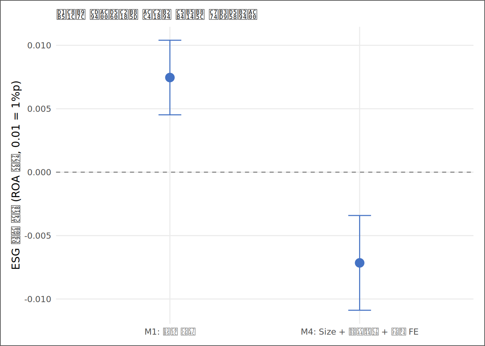
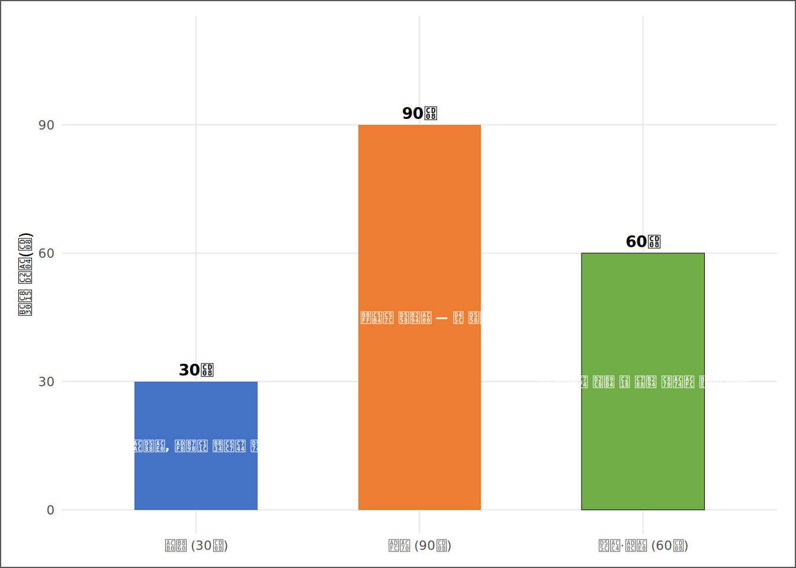

# | 키워드 | 한 줄 핵심 |
|---|---|---|
1 | 보고서 표준 구조 (8절) | 요약→질문→데이터→방법→결과→강건성→한계→권고 — 이 순서를 벗어나지 않는다 |
2 | 결론 우선 글쓰기 (BLUF) | 결론을 마지막에 배치하는 미스터리 소설 구조는 보고서가 아니다 — 결론을 첫 줄에 쓴다 |
3 | 자기완결 표·그림 | 캡션만 읽어도 표 하나가 무엇을 말하는지 알아야 한다 — 본문을 읽어야만 이해되는 표는 실패한 표다 |
4 | 한계의 역설 (투명성 = 신뢰) | 한계를 숨긴 보고서는 독자의 반론 한 방에 전체가 무너진다 — 먼저 고백한 한계는 신뢰를 만든다 |
5 | 통계 낭독 vs 의사결정 번역 | 숫자를 읽어주는 것은 분석가다 — 숫자를 의사결정 언어로 바꾸는 것이 보고자다 |
6 | 3분 Pitch 구조 | 결론(30초)→근거(90초)→한계와 권고(60초) — 이 구조를 벗어나면 3분은 순식간이다 |
7 | 재현성 선언 | 누가 어떤 데이터로 어떤 코드를 실행해도 같은 결과가 나와야 한다 — 재현성 없는 보고서는 증거가 아니다 |
최종 보고서 — 숫자에서 설득으로
“글쓰기는 생각하기의 다른 이름이다. 쓰지 못하는 분석은 아직 생각이 끝나지 않은 것이다.” — 저자 미상
사례로 시작하기
13번째 주, KG Asset 운용회의실. 팀장이 화이트보드에 한 줄을 썼다. “결론 — 근거 — 한계.” 그러고는 김자산을 향해 말했다. “임원 앞에서 주어지는 시간은 3분이다. 코드를 설명할 시간도 없고, 방법론을 자랑할 시간도 없다. 3분 안에 이 세 가지를 전달하지 못하면, 12주의 분석은 없었던 것이 된다.” 자산의 오늘 임무는 팀장이 임원 회의에서 직접 쓸 3분 Pitch 스크립트 초안을 준비하는 것이었다 — 주니어가 시니어의 무기를 세팅하는 역할이다.
자산의 노트북에는 12주 동안 만든 부품들이 가득했다. 3장에서 구축한 표본 기술통계, 8장에서 뽑은 집단 비교 표, 10장의 회귀 계수 이동 추적, 11장의 예측 확률 분포. 훌륭한 부품들이었다. 그런데 자산이 처음 만든 보고서 초안을 팀장이 읽고 돌려보낸 이유는 단 하나였다. “이건 보고서가 아니라 과정의 기록이다. 결론이 어디 있는가?”
보고서와 과정의 기록을 가르는 것은 분석의 깊이가 아니다. 청중이다. 분석가의 청중은 코드를 읽지 않는다. 그들이 묻는 것은 딱 세 가지다. “결론이 무엇인가. 왜 그 결론을 믿어야 하는가. 어디서 틀릴 수 있는가.” 이 세 질문에 답하는 구조가 보고서고, 나머지는 모두 부록이다.
이 장의 은유는 오케스트라다. 12주의 분석은 연습이었고, 각 장의 Output은 악기 파트다. 1악장 바이올린이 아무리 뛰어나도, 오케스트라는 지휘자 없이 소음이 된다. 지휘는 서사다 — 어떤 파트가 먼저 들어오고, 어떤 순간에 전체가 합창하고, 어느 악절에서 한 악기가 주제를 이끄는가. 보고서 작성은 악보를 그리는 일이다. 부품을 나열하는 분석가와 부품에 지휘를 더하는 보고자의 차이가 이 장에서 갈린다.
핵심 키워드
학습 목표
이 장을 마치면 다음 여섯 가지를 할 수 있다.
- 보고서 표준 8절 구조를 외우지 않고도 논리적으로 재구성할 수 있다.
- “결론 우선(BLUF)” 원칙을 적용해 동일한 분석을 두 가지 다른 서술로 쓰고, 어느 쪽이 설득력이 높은지 판단할 수 있다.
- 12주 동안 각 장에서 생산한 Output을 보고서의 어느 절에 배치할지 결정할 수 있다.
- 자기완결 표와 그림을 설계하는 원칙을 적용해 캡션만으로 독립적으로 읽히는 표를 만들 수 있다.
- 한계를 정직하게 공개하는 것이 보고서의 신뢰를 낮추는 것이 아니라 높이는 이유를 설명할 수 있다.
- 3분 Pitch 스크립트를 완성하고, 예상 질문 세 가지에 대한 답변을 준비할 수 있다.
D→I→K→W 4단계 파이프라인
| 단계 | 이 장에서의 모습 |
|---|---|
| 데이터 (D) | 1~12장의 모든 분석 Output — 계수 표, 기술통계, 예측 확률, 진단 그림 |
| 정보 (I) | 각 분석의 핵심 발견 — “ESG 평가 계수가 통제 후 이만큼 줄었다”, “적자 전환 확률이 이만큼이다” |
| 지식 (K) | 발견의 통합 해석 — “단순 회귀는 편의가 있었고, 통제 후에도 이 관계는 남았으며, 예측 정확도는 이 수준이다” |
| 지혜 (W) | 의사결정 권고 — “이 근거로 포트폴리오를 조정할 수 있는가, 없다면 다음에 무엇을 더 확인해야 하는가” |
데이터 출처와 수집
투입 자산 | 출처 | 보고서 절 | 역할 |
|---|---|---|---|
SSOT 원데이터 | Derived_SSOT_Dataset.csv (3~5장 파이프라인 산출) | 데이터 절 (표본 기술통계) | 보고서 전 절의 수치 원천 — 분석 재현의 기반 |
10장 회귀 부품 | ch10_model_comparison.csv, ch10_se_comparison.csv | 결과 절 (회귀 표), 강건성 절 (SE 비교) | 핵심 주장의 계량적 근거 — 계수 이동이 주요 증거 |
11장 예측 부품 | 로지스틱 계수 표, ROC 곡선 | 결과 절 (예측 성능), 강건성 절 | 리스크 스크리닝 결과 — 권고 절의 실행 근거 |
3장 표본 기술통계 | 표본 기간·기업 수·변수 분포 | 데이터 절 첫 단락 | 표본의 대표성과 한계를 독자에게 선언 |
모든 분석이 동일한 SSOT 데이터셋 위에서 진행된 이유가 여기에서 드러난다. 3장부터 12장까지의 결과가 동일한 표본에서 나왔기 때문에, 13장의 보고서는 “분석마다 표본이 달랐다”는 반론 없이 모든 결과를 한 그릇에 담을 수 있다.
최종 보고서는 각 장 Output CSV를 직접 소비하지 않고 SSOT에서 핵심 모형을 재추정해 전체 재현성을 보장한다(전체 재실행형). 표 13.2에서 열거한 각 장의 분석물은 ’해당 CSV 파일을 읽어 들인다’는 의미가 아니라 ’그 장에서 사용한 방법론을 이 보고서에서 다시 적용한다’는 의미다. 단일 SSOT를 출발점으로 모든 모형을 처음부터 재실행하면, 중간 산출 CSV의 존재 여부와 무관하게 분석 전체를 완전히 재현할 수 있다 — 재현성의 최고 기준이다.
오케스트라의 악보 — 보고서 표준 구조
분석가들이 처음 보고서를 쓸 때 저지르는 가장 흔한 실수는 분석한 순서대로 쓰는 것이다. 데이터를 불러온 다음 전처리를 설명하고, 기술통계를 나열한 뒤 모형을 돌리고, 결론을 마지막에 놓는다. 이것은 독자를 위한 구조가 아니라 분석가 자신을 위한 일지다.
오케스트라에서 악보의 순서는 연주자가 연습한 순서와 다르다. 바이올린 파트가 먼저 준비되었다고 해서 악보의 1악장이 반드시 바이올린으로 시작해야 하는 것은 아니다. 악보는 청중의 감상 경험을 위해 설계된다. 보고서도 마찬가지다 — 결론부터 제시하고, 청중이 “왜?”라고 묻는 순간에 근거를 꺼내고, “그 결론이 틀릴 수도 있지 않냐?”는 의심이 생길 즈음 한계를 자백한다.
절 번호 | 절 제목 | 길이 목표 | 핵심 질문 |
|---|---|---|---|
1 | 요약 (Executive Summary) | 1문단 | 결론이 무엇인가 — 근거 한 줄 + 한계 한 줄 |
2 | 질문 (Research Question) | 1문단 | 무엇을 왜 물었는가 — 질문이 명확해야 결과도 명확하다 |
3 | 데이터 (Data) | 1~2문단 + 기술통계 표 | 누구의 데이터를 언제 어디서 어떻게 모았는가 |
4 | 방법 (Method) | 1문단 | 어떤 통계 기법을, 왜 이 기법을 골랐는가 |
5 | 결과 (Results) | 주요 표·그림 + 해석 | 핵심 발견이 무엇인가 — 표와 그림이 자기완결로 답해야 |
6 | 강건성 (Robustness) | 보조 표 + 해석 | 결론이 표본·기간·변수를 바꿔도 살아남는가 |
7 | 한계 (Limitations) | 3~5개 항목 | 이 분석이 할 수 없는 말은 무엇인가 |
8 | 권고 (Recommendation) | 2~3가지 권고 | 독자는 무엇을 해야 하는가 — 행동 항목 구체화 |
이 8절 구조의 핵심 원칙 하나는 결론 우선(BLUF: Bottom Line Up Front)이다. 군사 작전 브리핑에서 시작된 이 원칙은 단순하다 — 상대가 화장실에 가기 전에 결론을 말하라. 요약 절의 첫 문장이 결론이어야 하고, 그 결론은 “분석을 해보았다”가 아니라 “이 포트폴리오를 조정해야 한다/하지 않아도 된다”이어야 한다. 요약을 쓰는 순서는 보고서를 전부 쓴 마지막이지만, 요약이 놓이는 위치는 첫 페이지다.
방법 재사용 — 각 장의 분석이 보고서로 들어오는 방식
공연 전 최후의 작업은 편성 확인이다. 각 악기 파트(각 장의 분석 방법)가 악보(보고서)의 어느 마디에 배치되는지, 지휘자(보고자)가 확인한다. 이 보고서는 중간 CSV를 읽어 들이는 대신 SSOT에서 모든 모형을 처음부터 재실행하는 전체 재실행형이다. 따라서 이 조립표는 ’어느 장 Output 파일을 가져오는가’가 아니라 ’어느 장의 분석 방법을 이 보고서에서 재사용하는가’를 보여준다.
# ① SSOT 데이터 적재 — 모든 분석의 단일 원천
ssot_raw <- read_book_csv(ssot_path)
# ② Winsorize 보조 함수 (4장 정의와 동일 — 장 내 자기완결)
winsorize <- function(x, probs = c(0.01, 0.99)) {
lo <- stats::quantile(x, probs[1], na.rm = TRUE)
hi <- stats::quantile(x, probs[2], na.rm = TRUE)
pmin(pmax(x, lo), hi)
}
# ③ 보고서용 통합 표본: 회귀(ESG-ROA) + 로지스틱(적자 예측)에 공통으로 필요한 변수만 선택
rpt_df <- ssot_raw |>
dplyr::transmute(
코드, 코드명, 회계연도,
ESG평가 = is_esg_rated,
ROA = winsorize(ROA),
Size,
부채비율 = 부채비율_Win,
ATO,
Loss = Loss_Dummy,
Female = Female_Ratio
) |>
tidyr::drop_na(ROA, Size, 부채비율, ESG평가, ATO, Loss)
# ④ 회귀 모형: 단순(M1) vs 완전통제(M4) — 10장 핵심 결과 회수
m1 <- lm(ROA ~ ESG평가, data = rpt_df)
m4 <- lm(ROA ~ ESG평가 + Size + 부채비율 + factor(회계연도), data = rpt_df)
# ⑤ 기업 클러스터 표준오차 (10장에서 배운, 이 분석에서 가장 큰 표준오차 기준)
se_cl <- sqrt(diag(sandwich::vcovCL(m4, cluster = rpt_df$코드)))
k_esg <- which(names(stats::coef(m4)) == "ESG평가")
# ⑥ 로지스틱 모형 — 11장 핵심 결과 회수
logit1 <- glm(Loss ~ Size + 부채비율 + ATO,
data = rpt_df, family = binomial(link = "logit"))
pred_prob <- stats::fitted(logit1)
roc_obj <- pROC::roc(rpt_df$Loss, pred_prob, quiet = TRUE)
auc_val <- as.numeric(pROC::auc(roc_obj))코드 읽기. 이 블록은 이 장의 엔진이다. ①에서 read_book_csv()가 13주 내내 쓴 동일한 SSOT 파일을 불러온다 — 같은 데이터 위에서 모든 장이 작동했기 때문에 이 한 줄이 모든 Output을 통합하는 고리다. ②의 winsorize()는 4장에서 배운 함수를 그대로 옮겼다. “자기완결” 원칙 — 이 파일 하나만 있으면 외부 스크립트 없이도 실행된다. ③의 transmute()는 필요한 변수만 남기고 나머지를 버린다 — 보고서 코드는 탐색 코드와 달리 최소한의 변수만 쓴다. ④~⑤는 10장 회귀 결과를 회수하는 축약 버전이고, ⑥은 11장 로지스틱 결과를 회수한다. pROC::auc()는 ROC 곡선 아래 면적 — 1에 가까울수록 예측력이 좋다.
분석 표본은 2010년부터 2024년까지 667개사, 기업-연도 관측치 10,000건이다. ESG 평가 비중은 40.5%, 적자 기업(Loss_Dummy=1) 비중은 14.5%다. 이제 각 장의 Output을 보고서 절에 배치한다.
장 | 재사용 방법 | 보고서 절 | 핵심 수치 (동적) |
|---|---|---|---|
3장 | 표본 기술통계 (기간·기업 수·변수 분포) | 3. 데이터 | 10,000건, 667개사, 2010~2024 |
8장 | 집단 비교 (ESG 평가군 vs 미평가군 Size t검정) | 5. 결과 — 기술 | ESG 평가군 Size 격차 — 대형사 편향 확인 |
10장 (M1) | 단순회귀 계수 (통제 없는 기준선) | 5. 결과 — 회귀 기준선 | M1 ESG 계수 0.0075 (통제 없는 평균 차이) |
10장 (M4) | 완전통제 회귀 계수 (M4, 연도 FE) | 5. 결과 — 핵심 주장 | M4 ESG 계수 -0.0072, 1% 수준에서 통계적으로 유의하다 |
10장 (SE) | 클러스터 표준오차 비교 | 6. 강건성 | 클러스터 t값 -2.20 — 결론 유지 |
11장 | 로지스틱 계수 + AUC | 5. 결과 — 예측, 6. 강건성 | AUC 0.780 — AUC 0.780로 적자 전환 예측에 실용적 수준의 변별력을 보인다 |
12장 | 시차 회귀 결과 + 연구주제 후보 | 7. 한계, 8. 권고 | 식별 위협 3개 + 권고 방향 |
chapter | script | input | output | expected_n | actual_n | status |
|---|---|---|---|---|---|---|
3장 | Script/ch03_data_source.R | Derived_SSOT_Dataset.csv | Output/ch03_panel_structure.csv | 7 | 7 | 일치 |
8장 | Script/ch08_compare.R | Derived_SSOT_Dataset.csv | Output/ch08_ttest_esg_size.csv | 8 | 8 | 일치 |
10장 | Script/ch10_regression.R | Derived_SSOT_Dataset.csv | Output/ch10_model_comparison.csv | 4 | 4 | 일치 |
10장 | Script/ch10_regression.R | Derived_SSOT_Dataset.csv | Output/ch10_se_comparison.csv | 1 | 1 | 일치 |
11장 | Script/ch11_logit.R | Derived_SSOT_Dataset.csv | Output/ch11_classification_perf.csv | 4 | 4 | 일치 |
12장 | Script/ch12_causal_topics.R | Derived_SSOT_Dataset.csv | Output/ch12_lag_comparison.csv | 2 | 2 | 일치 |
13장 | Script/ch13_report.R | Derived_SSOT_Dataset.csv | Output/ch13_manifest.csv | 7 | 미생성 |

그림 13.1이 이 보고서의 심장이다. 통제 전(0.0075)과 통제 후(-0.0072) 사이에서 계수가 부호가 반전되었다. 통제 후 ESG 평가 계수(-0.0072)는 1% 수준에서 통계적으로 유의하다 — 단순회귀의 주장은 충분한 근거가 되지 못한다. 그림 하나로 “비교 가능한 기업끼리 비교하지 않으면 결론이 달라진다”는 이 보고서의 핵심 주장이 시각적으로 완성된다.
두 목소리 — 통계 낭독과 의사결정 번역
동일한 분석 결과를 두 가지 다른 방식으로 쓸 수 있다. 어느 쪽이 보고서인가.
# ① 통계 낭독: 숫자를 그대로 읽어주는 서술
voice_stat <- paste0(
"ESG 평가 더미의 단순회귀 계수는 ", f4(b_esg_m1), "이며 p값은 ", f4(p_esg_m1), "이다. ",
"Size와 부채비율, 연도 고정효과를 통제한 M4의 계수는 ", f4(b_esg_m4), "이며 ",
sig_label(p_esg_m4), ". R²는 ", f3(r2_m4), "이다. ",
"기업 클러스터 표준오차 기준 t값은 ", f2(t_cl_esg), "이다."
)
# ② 의사결정 번역: 같은 숫자를 청중의 언어로 바꾼 서술
voice_decision <- paste0(
if (flip) {
paste0(
"외부 보고서는 ESG 평가기업의 ROA가 더 높다고 주장했으나, 같은 체급(규모·레버리지)끼리 비교하자 ",
"방향 자체가 반전되었다(", pp(b_esg_m4), "). ",
"이 관계는 ESG 평가대상 여부와 ROA의 진짜 차이가 아니라, ",
"대형기업이 평가 대상으로 선택되었기 때문에 생긴 구조적 착시일 가능성이 높다. ",
"해당 보고서를 근거로 한 포트폴리오 증액은 자본 오배분 리스크를 수반한다."
)
} else if (p_esg_m4 < 0.05) {
paste0(
"같은 규모·레버리지의 기업끼리 비교해도 ESG 평가기업의 ROA가 ", pp(b_esg_m4), " 높은 조건부 관계가 남는다. ",
"단, 이 결과는 '인과'가 아니라 '같은 체급 내 평균 차이'이며, ",
"산업과 지배구조 등 미통제 변수가 결론을 바꿀 수 있다. ",
"이 수준의 근거로는 증액 검토를 시작할 수 있으나, ",
"인과 확인 전에는 비중 확대에 신중해야 한다."
)
} else {
paste0(
"규모와 레버리지를 동일하게 통제하면 ESG 평가기업의 수익성 우위(", pp(b_esg_m4), ")는 ",
"통계적으로 확인되지 않는다. ",
"외부 보고서의 숫자는 대기업 편향이 만든 착시였을 가능성이 높으며, ",
"현재의 근거로 포트폴리오를 조정하는 것은 정당화되지 않는다."
)
}
)
# ③ 두 목소리를 나란히 비교하는 표
voices_tbl <- tibble::tibble(
구분 = c("통계 낭독", "의사결정 번역"),
서술 = c(voice_stat, voice_decision)
)코드 읽기. ①과 ②는 같은 숫자를 두 가지 문체로 조립하는 작업이다. paste0()는 문자열 여러 개를 하나로 이어붙이는 함수다 — 양쪽 모두 하드코딩된 수치가 없다. f4(b_esg_m4), pp(b_esg_m4) 같은 서식 함수가 중간에 박혀 있어, 데이터가 바뀌면 문장이 함께 바뀐다. ②의 if(flip) ... else if(p_esg_m4 < 0.05) ... else ... 삼분기는 부호·유의성에 따라 결론의 방향 자체가 달라지게 설계되었다 — 데이터가 어떤 결과를 내더라도 문장이 틀리지 않도록 설계하는 것이 집필헌법의 핵심 요구다. ③에서 두 서술을 tibble::tibble()로 하나의 표에 담아 나란히 제시한다.
구분 | 서술 |
|---|---|
통계 낭독 | ESG 평가 더미의 단순회귀 계수는 0.0075이며 p값은 0.0000이다. Size와 부채비율, 연도 고정효과를 통제한 M4의 계수는 -0.0072이며 1% 수준에서 통계적으로 유의하다. R²는 0.132이다. 기업 클러스터 표준오차 기준 t값은 -2.20이다. |
의사결정 번역 | 외부 보고서는 ESG 평가기업의 ROA가 더 높다고 주장했으나, 같은 체급(규모·레버리지)끼리 비교하자 방향 자체가 반전되었다(-0.72%p). 이 관계는 ESG 평가대상 여부와 ROA의 진짜 차이가 아니라, 대형기업이 평가 대상으로 선택되었기 때문에 생긴 구조적 착시일 가능성이 높다. 해당 보고서를 근거로 한 포트폴리오 증액은 자본 오배분 리스크를 수반한다. |
어느 쪽이 보고서인가. 답은 명확하다 — ②가 보고서다. ①은 컴퓨터가 할 수 있는 일이다. 보고서는 독자가 “그래서 나는 무엇을 해야 하는가”를 알 수 있어야 한다. 통계 낭독은 숫자를 옮겨 적은 것이고, 의사결정 번역은 숫자를 행동의 언어로 바꾼 것이다. 이 두 서술을 나란히 쓸 수 있는 분석가가 회의실에서 살아남는다.
표와 그림의 자기완결 원칙
보고서에서 표와 그림이 지켜야 할 원칙은 하나다. 캡션만 읽어도 그 표가 무엇을 말하는지 알아야 한다. 본문을 읽지 않고 표만 따로 발췌해 다른 사람에게 보냈을 때, 그 사람이 표의 의미를 이해할 수 있으면 자기완결이고, 이해하지 못하면 실패한 표다.
구분 | 예시 | 문제 |
|---|---|---|
실패한 캡션 (캡션 의존) | 표 1. 회귀 결과 | 무슨 회귀인지, 종속변수가 무엇인지, 누구의 데이터인지 알 수 없다 |
실패한 캡션 (맥락 의존) | 표 3. 통제 후 계수 (위 설명 참조) | 캡션만으로는 독립적으로 읽히지 않는다 — 본문을 찾아야 한다 |
성공한 캡션 (자기완결) | 표 13.4 전 장 Output 부품 회수 조립표 — ESG 평가 계수 M1(통제 없음) 0.0075 vs M4(Size·레버리지·연도 통제) -0.0072; AUC 0.780 — 보고서 각 절의 근거가 되는 분석 부품과 출처를 정리 | 캡션 자체에 핵심 수치·변수·해석의 요점이 담겨 있다 |
그림의 자기완결도 같은 원칙이다. fig.cap 인수로 작성하는 Quarto 캡션은 다음을 포함해야 한다. (1) 가로축과 세로축이 무엇인가, (2) 점·선·막대의 색깔이나 모양은 무엇을 구분하는가, (3) 독자가 눈여겨봐야 할 패턴은 무엇인가. 그림 13.1의 캡션이 “점은 추정치, 선은 95% 신뢰구간, 0 기준선과의 거리와 방향이 핵심”을 명시한 것이 그 예다.
한계와 식별 위협(Threats to Identification) — 역설
보고서 초년생이 가장 두려워하는 절이 “한계”다. “내 분석의 약점을 스스로 공개하면 설득력이 떨어지지 않는가?” 이 두려움은 정확히 반대다. 한계를 스스로 명시한 보고서는 더 신뢰받는다. 관측 불가능 이질성(unobserved heterogeneity) — 기업 고유의 경영 능력, 문화, 지배구조처럼 데이터에 잡히지 않는 특성 — 은 통제 변수가 아무리 많아도 완전히 제거되지 않는 구조적 위협이다. 동시성(simultaneity) — ESG 평가가 ROA를 높이는지, 우량 기업이 ESG 평가를 받는지를 관측 데이터만으로 가르기 어렵다는 점 — 역시 관측 연구에서 끝내 남을 수 있는 대표적 식별 위협이다.
이유는 두 가지다. 첫째, 독자(임원, 심사위원, 반대편 분석가)는 어차피 한계를 찾아낸다. 보고자가 먼저 말하지 않으면, 독자가 찾아서 지적하는 순간 보고서의 신뢰성이 전체적으로 무너진다. 먼저 고백한 한계는 “이 분석가는 자기 분석의 경계를 안다”는 신호가 된다. 둘째, 한계를 명시하면 그 한계가 결론을 얼마나 바꾸는지 스스로 제어할 수 있다. “이 분석은 산업을 통제하지 못했다 — 그러나 Size와 연도를 통제한 후에도 남은 관계는 산업 편향으로만 설명되기 어렵다”는 서술은, 한계를 인정하면서도 결론의 핵심을 방어한다.
이 장의 분석(M4)이 통제하지 못한 것들을 정직하게 나열하면 다음과 같다. 산업별 수익성 구조(산업 고정효과 미포함), 기업별 불변 특성(엄밀한 이원고정효과 미포함), ESG 등급 수준이 아닌 평가 여부(0/1 더미의 뭉뚱그림), 역인과의 가능성(12장 시차 모형이 완화하지만 제거하지는 못한 문제). 이 목록이 한계 절에 들어가고, 각 한계에 대해 “만약 이것이 결론을 바꾼다면, 어떤 추가 분석으로 확인할 수 있는가”를 함께 쓰면 한계 절이 완성된다.
3분 Pitch — 임원 앞에서 말할 때

3분 Pitch는 시간의 예술이다. 30초-90초-60초의 배분을 기억하라. 결론(30초)에서는 한 문장으로 끝내야 한다 — 이 보고서라면 “외부 보고서의 ESG 단순회귀는 대기업 편향의 착시이며, 통제된 비교 기준으로는 동일한 주장을 뒷받침하기 어렵습니다”이다. 근거(90초)에서는 표나 그림 하나를 가리키며 핵심 숫자 하나를 말한다 — “ESG 평가 더미의 계수가 M1(0.0075)에서 M4(-0.0072)로 부호가 반전되었다으며, 기업 클러스터 기준 t값은 -2.20입니다. 추가로 로지스틱 모형의 AUC는 0.780입니다.” 한계와 권고(60초)에서는 “이 결론이 틀릴 수 있는 조건 하나와, 그래서 다음 주에 무엇을 할 것인가”를 말한다.
Pitch에서 가장 많이 하는 실수는 두 가지다. 첫째, 방법론 설명에 시간을 쓰는 것 — 임원은 “lm() 함수를 사용해 다중회귀를 실시했습니다”가 무엇인지 알지도 않고, 알 필요도 없다. 둘째, 모든 결과를 나열하는 것 — 보고서에는 여덟 개 표가 있더라도 Pitch에서는 그중 가장 핵심적인 표 하나만 보여준다. 나머지는 “자료에 있습니다”로 충분하다.
분석가의 번역 표 — 숫자에서 의사결정 문장으로
숫자 | 통계적 해석 | 실무 번역 |
|---|---|---|
M1 ESG 계수 0.0075 | 통제 없는 집단 평균 차이 — 단순회귀의 기준선 | 단독 인용 금지 — 비교 대상이 맞지 않는 숫자 |
M4 ESG 계수 -0.0072 | 통제 후 부호 역전 — 방향이 바뀐다, 1% 수준에서 통계적으로 유의하다 | 외부 보고서의 방향 자체가 실패 — 증액 근거로 쓸 수 없다 |
클러스터 t값 -2.20 | 기업 클러스터 기준 유의 | 이 분석에서 가장 큰 표준오차 기준에서도 유지 — 보고 가능 |
R² 0.132 | 모형이 ROA 분산의 이 비율을 설명 | 예측력보다 계수의 식별이 목적 — R² 자체는 판단 기준이 아님 |
AUC 0.780 | 실용적 수준 변별력 — 0.5=무작위, 1=완벽 | 실용적 리스크 스크리닝 가능 수준 — 개별 종목 점검에 활용 |
적자 기업 비중 14.5% | 14.5%가 적자 전환 — 포트폴리오 리스크의 규모 | 표본의 14.5%가 잠재 리스크 — 사전 스크리닝 수요 존재 |
남은 한계 | 관측 연구의 구조적 한계 — 인과는 보류하고 조건부 관계로 읽어야 한다 | 인과 주장 불가, 산업·지배구조 미통제 — 결론은 조건부 관계로 제한 |
R로 직접 해보기
| IPO | 내용 |
|---|---|
| Input | In_class_R/11주차/Derived_SSOT_Dataset.csv (전 장 동일 SSOT) |
| Process | SSOT 적재 → 핵심 모형 재현(M1·M4·로지스틱) → 부품 회수 조립표 → 두 목소리 비교 → 보고서 골격 완성 |
| Output | Output/ch13_assembly_table.csv, Output/ch13_manifest.csv, 그림 13.1 (계수 비교), 그림 13.2 (Pitch 타임라인) |
| Report | 표준 8절 보고서 1부 + 3분 Pitch 스크립트 1부 |
난이도 | 분석 아이디어 | 확인 포인트 |
|---|---|---|
초심자 | 표 13.4 방법 재사용 조립표를 자신의 분석 주제로 다시 작성한다 — 어느 장 Output이 어느 절에 들어가는가 | 빠진 장 Output이 있는가 — 빠진 이유가 '결과가 좋지 않아서'라면 선택편향이다 |
초심자 | 표 13.5의 두 목소리를 자신의 분석 결과로 다시 작성한다 — 통계 낭독 버전을 먼저 쓰고, 의사결정 번역 버전으로 재작성한다 | 두 버전 중 어느 쪽이 더 설득력 있는가 — 이유를 한 문장으로 |
초심자 | 표 13.3의 8절 구조에서 자신의 보고서에서 가장 취약한 절을 한 개 골라 해당 절을 강화하는 내용을 추가한다 | 그 절의 핵심 질문(표 13.3 우측 열)에 지금 답하고 있는가 |
고급자 | Pitch 3분 스크립트를 타이머를 켜고 실제로 말해보고, 초과한 부분을 삭제한다 — 어느 내용이 핵심인지 강제로 판단하게 된다 | 결론 30초 안에 끝나는가, 근거가 90초 안에 소화되는가 |
고급자 | 자신의 보고서 한계 절을 다른 사람(동료)에게 보여주고, 그 사람이 '이 한계가 결론을 바꾸는가'를 판단하게 한다 — 외부 검토가 한계 절의 완성도를 교정한다 | 동료가 '모른다'고 하면, 그 한계를 보고서에 더 명확히 써야 한다 |
AI 협업 프로토콜 — 초안을 맡기고, 판단은 돌려받아라
보고서 작성은 분석 중 AI와 협업하기 가장 자연스러운 단계다. 그러나 협업의 경계가 가장 중요한 단계이기도 하다. AI는 문장을 생성하는 데 뛰어나지만, 결론의 타당성을 판단하지는 못한다.
수준 | 이 장의 행동 |
|---|---|
L1 (인식) | AI에게 '내 분석 결과를 보고서로 써줘'라고 결과표를 통째로 넘긴다 |
L2 (적용) | 8절 구조를 따르되, 각 절의 초안을 AI와 함께 작성하고 수치는 자신이 직접 검증한다 |
L3 (분석) | AI가 쓴 '통계 낭독' 초안을 받아, 스스로 '의사결정 번역' 버전으로 전환한다 — AI의 초안을 기반으로 삼되 결론 문장은 반드시 손으로 다시 쓴다 |
L4 (창의) | AI를 반대편 심사위원으로 활용한다 — '이 보고서의 결론을 무너뜨릴 논거 다섯 가지를 제시하라'고 시킨 뒤, 그중 실제로 위협이 되는 것만 한계 절에 싣는다 |
AI 협업 워크플로는 두 개의 프롬프트로 충분하다.
[프롬프트 1 — 보고서 골격 검토] “내가 작성한 보고서 요약 절을 읽고, (1) 결론이 첫 문장에 있는가 (2) 근거 한 줄이 있는가 (3) 한계 한 줄이 있는가를 점검하라. 없으면 어느 문장을 어디로 옮겨야 하는지 구체적으로 표시하라.”
[프롬프트 2 — 한계 절 강화] “내 분석의 한계 절 초안이다. (1) 나열된 한계 중 결론을 실제로 바꿀 수 있는 것과 그렇지 않은 것을 구분하라 (2) 내가 놓친 중요한 한계가 있으면 추가하라 (3) 각 한계에 대해 ’이를 확인할 추가 분석’을 한 줄씩 제안하라.” AI의 답에서 실제로 확인할 수 있는 항목은 데이터로 검증하고, 확인할 수 없는 항목은 한계로 그대로 남긴다.
AI에게 맡겨도 되는 일 | 사람이 반드시 판단해야 하는 일 |
|---|---|
8절 구조 초안 작성 | 결론 문장의 방향과 강도 — 인과 표현이 없는지 확인 |
통계 낭독 버전 문장화 | 통계 낭독 → 의사결정 번역 전환 — 맥락과 청중을 아는 것은 사람뿐 |
Pitch 스크립트 초안 60초 구성 | 결론 30초의 핵심 문장 — 회사와 투자 맥락을 반영해야 |
반대 논거 브레인스토밍 | 어느 반론이 실제로 결론을 바꾸는가 — 데이터로 직접 확인 |
캡션 문장 초안 | 캡션에 핵심 수치가 올바르게 들어갔는지 — AI는 수치를 지어낼 수 있다 |
정리, 함정, 다음 장
12주의 분석이 공연이 되려면, 세 가지가 갖춰져야 한다. 첫째, 결론이 먼저여야 한다. 독자는 “이 사람이 무슨 말을 하려는가”를 30초 안에 알아야 한다. 둘째, 표와 그림이 자기완결이어야 한다. 캡션만 읽어도 이해되지 않는 표는, 청중이 본문을 찾지 않으면 아무 말도 못 하는 표다. 셋째, 한계가 정직해야 한다. 한계를 숨기면 반론 한 방에 전체가 무너지고, 먼저 공개하면 결론의 경계를 스스로 통제할 수 있다.
12주를 1장부터 되짚어보면, 이 장은 모든 Output의 종착지다. 1장에서 만든 재현 가능한 환경이 없었다면 분석 결과를 재현하는 보고서 코드가 깨졌을 것이다. 2장의 분해 사고가 없었다면 질문이 흐릿한 채로 끝났을 것이다. 4장의 Winsorize가 없었다면 극단 기업 몇 곳이 계수를 끌고 갔을 것이다. 12장에서 작성한 분석 계획서가 이 장의 입력이 되었고, 그 계획서의 질이 보고서의 구조를 결정했다.
분석가들이 빠지는 함정 세 가지를 기억하라.
- 코드와 과정을 자랑한다. 임원은 회귀분석 R 코드를 읽지 않는다. 보고서에 코드 블록이 있다면, 그것은 분석가가 청중을 잊었다는 신호다. 코드는 부록이나 별도 스크립트에, 보고서에는 결론과 해석만.
- 한계를 숨긴다. 한계가 없는 분석은 없다. 한계 절이 비어 있는 보고서는 저자가 한계를 모르거나, 알면서 숨긴 것이다. 어느 쪽이든 신뢰를 잃는다.
- 결론 없는 “분석을 해보았다” 보고서를 쓴다. “분석 결과 여러 가지를 확인할 수 있었다”는 결론이 아니다. “이 포트폴리오의 비중을 유지/축소/확대해야 한다”처럼 청중이 행동을 결정할 수 있는 문장이 결론이다.
점검 항목 | 통과 기준 |
|---|---|
요약 절의 첫 문장이 결론(행동 권고)인가 | 첫 문장 = 결론 + 핵심 근거 한 문장 이내 |
표 캡션만 읽어도 표가 무엇을 말하는지 알 수 있는가 | 캡션 단독 독해 테스트 통과 (타인이 읽어도 이해) |
결론을 뒷받침하는 핵심 표·그림이 보고서에 1~2개로 집약되어 있는가 | 결과 절에 핵심 표·그림이 명확히 강조됨 |
한계 절에서 결론을 실제로 바꿀 수 있는 위협 최소 2개를 명시했는가 | 한계 절 최소 2항목, 각 항목에 추가 검증 제안 |
강건성 절에서 클러스터 표준오차 포함 최소 1개의 교차검증 결과를 제시했는가 | 표 13.7 형식 또는 동등한 SE 비교 제시 |
재현에 필요한 정보(데이터 경로·버전·스크립트명)가 보고서 어딘가에 있는가 | 데이터·스크립트·패키지 버전 명시 |
인과 표현('효과', '원인', '미치는 영향')을 조건부 관계 표현으로 모두 바꿨는가 | 조건부 관계 표현('단순 기울기', '함께 움직이는', '평균 차이')으로 전환 |
분야 | 같은 구조의 보고서 질문 |
|---|---|
투자 운용 | 이 ESG 펀드 비중 확대 권고의 근거는 비교 가능한 기업끼리 비교한 결과인가 |
회계 감사 | 이상 탐지 모형의 AUC가 이 수준이라면, 감사 자원을 어느 기업에 집중해야 하는가 |
기업 전략 | 경쟁사 대비 수익성 우위가 규모 차이에서 오는 것인지, 운영 효율에서 오는 것인지 |
공공 정책 | 보조금 수혜 기업의 성과 지표가 미수혜 기업보다 높다 — 선택편향은 얼마나 제거됐는가 |
인사 관리 | 교육 이수자의 성과가 높다 — 의욕 높은 직원이 교육을 신청하는 자기선택 편향이 있는가 |
이 장이 끝나는 지점에서 KG Asset의 김자산은 12주 전과 다른 사람이 되었다. 이전의 자산은 데이터에서 패턴을 발견하는 분석가였다면, 지금의 자산은 패턴을 의사결정의 언어로 번역하는 보고자다. 분석가는 회귀를 실행하고, 보고자는 회귀가 임원에게 왜 중요한지를 말한다. 이 책의 13장이 마지막 장인 이유가 여기 있다 — 도구를 배운 다음에는 도구를 쓰는 이유를 배워야 한다.
주차 PBL — 12주의 부품으로 오케스트라를 완성하라
이 장의 기술을 집결시키는 것이 기말 PBL이다. 본문의 ESG-ROA 분석을 그대로 차용하되, 각자의 관점에서 다른 청중(포트폴리오 CIO, 리스크 담당 CRO, 투자위원회)을 상정해 보고서와 Pitch를 완성한다.
Context. KG Asset 연간 리뷰 시즌이다. 팀장은 분석가들에게 각자 12주간 분석한 데이터를 바탕으로 임원진에게 제출할 최종 보고서 한 부와 3분 Pitch 스크립트 한 부를 제출하라고 지시했다. “보고서는 임원이 읽을 것이고, 스크립트는 내가 임원 회의에서 쓸 수 있도록 초안을 완성해 두게. 임원은 코드를 읽지 않는다. 결론·근거·한계 세 가지만 전달하면 된다.”
| 단계 | 미션 | 핵심 |
|---|---|---|
| Level 1 (필수) | 보고서 골격 채우기 | 표 13.3의 8절 구조에 각 장 Output을 배치하는 표(표 13.4 형식)를 자신의 분석 주제로 재작성 |
| Level 2 (심화) | 완성 보고서 작성 | 8절 구조 보고서 전문 — 모든 수치는 동적(하드코딩 금지), 표 캡션 자기완결, 한계 절 최소 3항목 |
| Level 3 (완성) | 3분 Pitch 스크립트 | 30초 결론·90초 근거·60초 한계·권고 구조, 예상 질문 3개와 답변 초안 |
제출물은 과목 표준 4종 — Input(SSOT 경로와 사용 버전), Script(완전 재현 가능 Quarto 파일), Output(결과 CSV·그림), Report(8절 보고서 PDF + Pitch 스크립트). 재현성 없는 보고서는 평가 대상에서 제외된다.
제출 전 아래 매니페스트 표를 작성해 모든 행의 파일이 실제로 존재하는지 확인하라. 기대 행수가 일치하지 않으면 코드를 다시 실행하거나 경로를 점검한다.
| 구분 | 파일명 (예시) | 형식 | 기대 행수 | 생성 장 |
|---|---|---|---|---|
| Input | Derived_SSOT_Dataset.csv | CSV | SSOT 전체 행 | 3~5장 |
| Script | ch_final_report.qmd | Quarto | — | 13장 |
| Output | ch_assembly_table.csv | CSV | 방법 재사용 행 수 | 13장 |
| Output | coef_compare_plot.png | PNG | — | 13장 |
| Output | pitch_timeline_plot.png | PNG | — | 13장 |
| Report | final_report.pdf | — | 13장 | |
| Report | pitch_script.md | Markdown | — | 13장 |
수행 가이드라인 (모범답안이 아니라 사고의 이정표다).
- 보고서의 첫 문장이 결론이 아니라 배경 설명으로 시작된다면 다시 쓴다. 독자는 첫 문장에서 이 보고서를 계속 읽을지 결정한다.
- “분석해 보았다”, “확인할 수 있었다”, “발견되었다”는 결론 문장이 아니다. “이 포트폴리오의 비중을 유지/조정해야 한다”처럼 행동을 지시하는 문장이 결론이다.
- 한계 절에서 “데이터의 한계가 있다”는 문장은 아무 정보도 주지 않는다. “산업 고정효과를 포함하지 못했으며, 만약 포함한다면 ESG 계수가 크게 움직일 수 있다 — 이는 12장 M5 모형으로 확인 가능하다”처럼 구체적이어야 한다.
- AI를 쓸 때는 초안을 받은 뒤 반드시 수치를 직접 확인하라 — AI는 없는 수치를 지어낼 수 있다. 보고서에 들어가는 모든 수치는 R 코드의 동적 출력(inline R)으로 보장되어야 한다.
- Pitch 스크립트를 쓴 뒤 타이머를 켜고 혼자 말해보라. 2분 30초에 끝나는 사람은 준비가 됐고, 4분이 지나도 끝나지 않는 사람은 내용의 절반을 더 버려야 한다.
- 예상 질문 세 가지는 반드시 준비한다. ⓐ “인과라고 볼 수 있는가?” — 답: “조건부 관계이며, 인과 확인을 위해서는 추가 식별 전략이 필요하다.” ⓑ “다른 기간에도 같은 결과인가?” — 답: 강건성 절의 표본 분할 결과를 인용. ⓒ “산업별로 다르지 않은가?” — 답: 현재 한계이며, 산업 데이터 결합이 다음 단계다.
채점 루브릭 (100점).
| 평가 항목 | 배점 | 통과 기준 |
|---|---|---|
| 재현성 | 20 | 데이터 경로·스크립트·패키지·표본 수가 명시되어 그대로 재실행 가능, 인라인 R 수치 100% |
| 분석 | 30 | 핵심 모형 결과(회귀 계수 이동, 강건성 표준오차, 로지스틱 AUC)가 정확히 보고되고 해석됨 |
| 해석 | 25 | 통계 낭독이 아니라 의사결정 번역 — 결론이 행동 지시 문장, 한계가 구체적 위협으로 제시 |
| 소통 | 25 | Pitch 3분 구조 준수, 캡션 자기완결, 청중(임원)의 언어로 작성 |
이 장의 자료
- 데이터:
In_class_R/11주차/Derived_SSOT_Dataset.csv(전 장 동일 SSOT) - 전체 스크립트:
Script/ch13_final_report.R(본문 코드 전체) - 산출물:
Output/ch13_assembly_table.csv(부품 회수 조립표),Output/ch13_manifest.csv(산출물 매니페스트) - 보고서:
Report/final_report.md(표준 8절 보고서),Report/pitch_script.md(3분 Pitch 스크립트)
AI 협업 권장. 보고서 초안 작성에서 AI를 가장 효율적으로 쓰는 방법은 “8절 구조의 각 절을 별도 프롬프트로 맡기는” 것이다 — 한 번에 전체를 맡기면 AI가 수치를 지어내는 경향이 강해진다. 절 단위로 맡기고, 받은 초안의 수치를 직접 R로 확인하는 루틴을 만들어라. Pitch 스크립트는 AI 초안을 받은 뒤 타이머로 3분 테스트를 거치면, AI가 넣은 불필요한 배경 설명이 어디인지 즉시 보인다.
AI 사용 시 주의 3가지. (1) AI가 생성한 보고서 문장에 인과 표현이 섞이는 경우가 매우 흔하다 — “영향을 미쳤다”, “개선시켰다” 같은 표현을 전부 조건부 관계 표현으로 교체하라. (2) AI는 캡션에 정확한 수치를 쓰지 못한다 — 캡션의 수치는 반드시 본문 코드의 inline R 출력과 일치하는지 확인하라. (3) AI가 요약하는 한계 항목은 대개 일반론이다 — “표본 크기의 한계”, “데이터 편향”보다 이 분석의 구체적 취약점(“산업코드 미포함으로 ESG 계수에 산업 구성 효과가 혼재”)을 써야 한다.
연습문제
문제 1. 다음 두 문장 중 보고서의 결론 절에 들어갈 수 있는 것은 어느 쪽인가. (가) “ESG 평가 여부를 독립변수로 한 다중회귀 분석 결과, 규모와 레버리지를 통제한 후 계수의 부호와 유의성 변화가 관찰되었다.” (나) “통제된 비교 기준으로 외부 보고서의 단순회귀 결과는 포트폴리오 증액의 충분한 근거가 되지 못한다 — 추가 식별 검증 이전에는 현행 비중 유지를 권고한다.” 어느 쪽인가, 그 이유는 무엇인가.
모범답안. (나)가 보고서 결론이다. (가)는 “통계 낭독” — 방법과 결과를 기술할 뿐, 청중이 무엇을 해야 하는지 말하지 않는다. 보고서의 결론은 결론 우선(BLUF) 원칙에 따라 청중의 행동을 지시해야 한다. (나)는 결론(“증액 근거 불충분”)과 그에 따른 권고(“현행 비중 유지”)를 명확히 제시한다. 결론의 판단 기준은 분석의 기술적 정확성이 아니라 청중이 그 문장을 읽고 행동할 수 있는가다.
문제 2. 보고서의 한계 절에 “데이터의 한계가 있어 결론에 제약이 있다”고만 쓰는 것이 왜 불충분한가. 이 장의 ESG-ROA 분석을 예로 들어, 적절한 한계 서술의 형식을 제시하라.
모범답안. “데이터의 한계”는 무엇이 한계인지, 그 한계가 결론을 얼마나 바꿀 수 있는지를 말하지 않아 독자에게 아무런 정보도 주지 않는다. 적절한 한계 서술의 형식은 세 요소를 포함해야 한다 — ① 구체적으로 무엇이 통제되지 않았는가, ② 그 변수가 결론에 어떤 방향으로 영향을 줄 수 있는가, ③ 그것을 어떻게 추가 확인할 수 있는가. 예: “이 분석은 산업별 수익성 구조를 통제하지 않았다. 산업에 따라 ROA의 체질이 다르고(금융·제조·바이오의 ROA 수준 차이) ESG 평가 가능성도 다르므로, 현재 M4 계수에는 산업 구성 차이가 혼재할 수 있다. 확인 방법: DataGuide 산업코드를 SSOT에 결합한 후 산업 고정효과를 추가한 M5를 추정하면, 계수의 변화 폭이 이 한계의 실제 크기를 드러낼 것이다.”
문제 3. 다음 캡션 중 자기완결 원칙을 충족하는 것을 고르고 이유를 설명하라. (가) “표 3. 회귀 결과” (나) “표 13.4 전 장 Output 부품 회수 조립표 — 3·8·10·11·12장의 핵심 Output이 보고서 8절 구조의 어느 절에 배치되는지, 그리고 이 분석에서의 핵심 수치(ESG 계수 M4, AUC)를 함께 정리한 메타 조립표” (다) “표 2. M1~M4 계수 이동 (위 분석 참조)”
모범답안. (나)가 자기완결이다. (가)는 무슨 회귀인지, 종속변수가 무엇인지, 어느 표본에서 나온 것인지 알 수 없다. (다)는 “위 분석 참조”라는 의존 표현이 있어 캡션 단독으로 읽히지 않는다. (나)는 (1) 어떤 데이터(전 장 Output), (2) 무엇을 정리했는가(8절 구조 배치), (3) 핵심 수치(ESG 계수, AUC)가 캡션에 명시되어, 본문을 읽지 않아도 그 표가 무엇을 위한 것인지 알 수 있다. 자기완결 캡션의 실용적 테스트: 표를 다른 사람에게 캡션만 보여줬을 때 그 표가 무엇을 말하는지 설명할 수 있으면 통과다.
문제 4 (Pitch 설계). 이 장의 ESG-ROA 분석 결과를 바탕으로 30초 결론 스크립트 초안을 작성하라. 단, (1) 인과 표현 사용 금지, (2) 통계 용어(p값, 회귀, VIF 등) 사용 금지, (3) 청중이 해야 할 행동을 반드시 포함할 것.
모범답안 (데이터 결과에 따라 두 버전으로 제시). 분기 조건: ESG 계수가 통제 후에도 유의한 경우 / 유의하지 않은 경우.
버전 A — 통제 후 관계가 살아남은 경우: “외부 보고서의 ESG 수익성 주장을 같은 규모와 재무구조의 기업끼리 비교하는 방식으로 재검증했습니다. 통제된 비교에서도 관계는 남아 있으나, 인과를 확인하기 위한 추가 검증이 필요합니다. 권고는 현행 비중을 유지하되, 다음 분기까지 산업 수준 분석을 추가로 진행하는 것입니다.”
버전 B — 통제 후 관계가 소멸한 경우: “외부 보고서가 제시한 ESG 수익성 우위는, 대형 기업이 평가 대상으로 선택되었기 때문에 생긴 구조적 착시일 가능성이 높습니다. 같은 체급끼리 비교하면 그 차이는 통계적으로 확인되지 않습니다. 이 보고서를 근거로 한 포트폴리오 증액은 현 시점에서 정당화되지 않으며, 현행 비중 유지를 권고합니다.”
두 버전 모두 30초 안에 끝나고, 통계 용어가 없으며, 청중의 행동(현행 비중 유지 또는 추가 검증)이 포함되어 있다. 어느 버전을 쓸지는 데이터가 결정한다 — 스크립트를 먼저 쓰고 데이터를 끼워 맞추는 것이 아니라, 데이터 결과에 따라 분기하는 스크립트를 설계하는 것이 이 장의 핵심 기술이다.